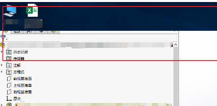
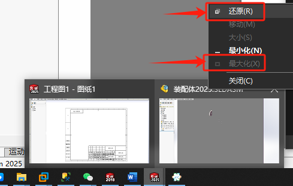

<!DOCTYPE html>
<html><head>
    <title>SOLIDWORKS-Solution</title><meta charset="utf-8">
    
<link rel="stylesheet" href="/css/main.css">
<!-- 引入配置文件 -->
    
<link rel="stylesheet" href="/lib/font-awesome/css/font-awesome.min.css">
<!-- 字体图片库 -->
    
<link rel="stylesheet" href="/lib/highlight/styles/atom-one-dark.css">
<!-- 代码高亮库 -->
<meta name="generator" content="Hexo 6.3.0"></head>
<body>
    <div id="main">
        <aside id="aside"><!-- 搜索栏 -->
<div id="search"><input class="search-input" type="text" placeholder="search"><icon id="search-icon" class="fa fa-bars" title="收起目录"></div>
<!-- 侧边目录栏 -->
<div id="tree">
</aside>		<!-- 引入侧边栏-->
        <nav><div>
    <!-- 显示侧边栏 --><icon id="asideshow" class="fa fa-bars" title="显示侧边栏"></icon><ul id="menu">
    <!-- 内部链接本页面直接跳转 -->
    
    <li class="menu-item"><a href="/index.html" class="menu-item-link">主页</a></li>
    
    <li class="menu-item"><a href="/search/index.html" class="menu-item-link">搜索</a></li>
    
    <li class="menu-item"><a href="/工具网站/index.html" class="menu-item-link">网站</a></li>
    
    <!-- 外部链接打开新的窗口跳转 -->
    
    <li class="menu-item"><a href="https://www.ict.com.cn/" class="menu-item-link" target="_blank">智诚ICT</a></li></ul>
</div></nav>	<!-- 引入导航 -->
        <div id="content"><div>
    <span id="post-author">作者: ICT</span>
    <span id="post-date">2025-01-12 16:28:19</span>
</div>

<div id="article"><h1 id="程序屏幕画面部分消失"><a href="#程序屏幕画面部分消失" class="headerlink" title="程序屏幕画面部分消失"></a>程序屏幕画面部分消失</h1><h2 id="问题"><a href="#问题" class="headerlink" title="问题"></a>问题</h2>

<p>SW不知道按到什么，怎么表头都不见了</p>
<h2 id="方法"><a href="#方法" class="headerlink" title="方法"></a>方法</h2><p>感觉像是左右显示器分辨率不一致的感觉</p>
<p>试下“atl+空格”做最大化窗口看看</p>
<p>在任务栏点SW程序，在底下右键某个文件进行【还原】或【最大化】。</p>


</div>
 			<!-- 引入正文 -->
    </div>	
    
<script src="/lib/highlight/highlight.pack.js"></script>
<!-- 引入代码高亮的 js -->
    
<script src="/lib/jquery-3.4.1.min.js"></script>
	<!-- 引入 jquery -->
    
<script src="/lib/jquery.pjax.js"></script>
		<!-- 引入 pjax -->
    
<script src="/js/main.js"></script>
					<!-- 引入 js 文件 -->
	
<script src="/js/search.js"></script>
					<!-- 引入 js 文件 -->	
	<script type="text/javascript">      
     var search_path = "search.xml";
	 if (search_path.length == 0) {search_path = "search.xml";} var path = '/' + search_path;
     searchFunc(path, 'local-search-input', 'local-search-result');
	</script>

	<script type="module">import mermaid from 'https://cdn.jsdelivr.net/npm/mermaid@10/dist/mermaid.esm.min.mjs'; 
	mermaid.initialize({ theme: 'forest'});
	</script> <!-- 引入 mermaid 流程图 -->
</body></html>